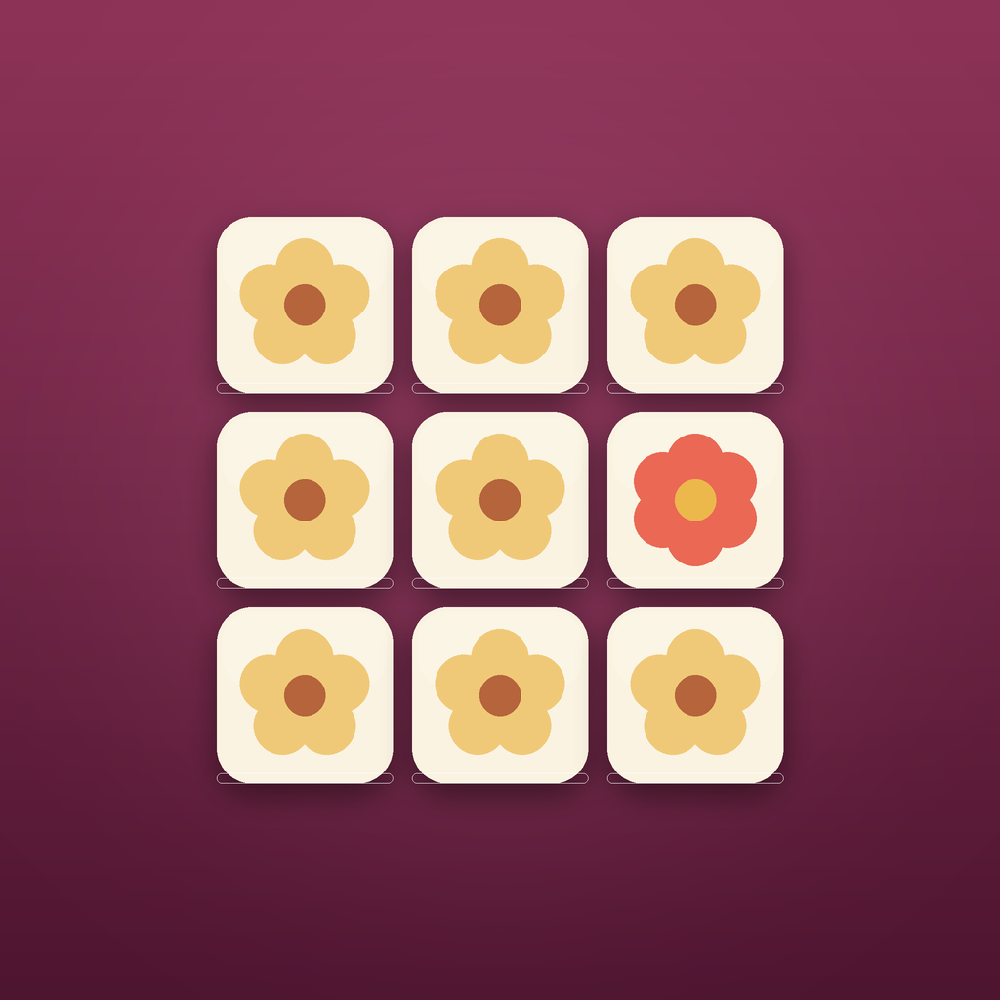

Support
Odd Bloom
Find the one original flower whose structure differs from the others. Boards grow from 6 to 16 flowers across twelve deterministic rounds. Tap to choose, revisit earlier rounds, replay a pattern, and save progress on this device. There is no timer, score penalty, or forced streak.
Get help
Email hi@mosselora.com with your device model and what happened. We read every message.
Your progress
Progress is saved on your device only. Deleting the app removes it; there is no cloud backup.